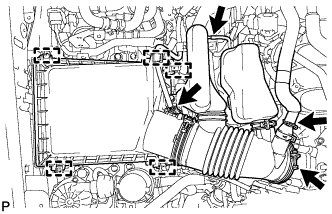

FUEL PRESSURE REGULATOR > REMOVAL |
| 1. DISCHARGE FUEL SYSTEM PRESSURE |
 |
Disconnect the 2 fuel pump ECU connectors.
Connect the cable to the negative (-) battery terminal.
Start the engine. After the engine has stopped on its own, turn the engine switch off.
Crank the engine again, and then check that the engine does not start.
Loosen the fuel tank cap, and then discharge the pressure in the fuel tank completely.
Disconnect the cable from the negative (-) battery terminal.
| Condition | Waiting Time |
| Vehicle enrolled in G-BOOK system | 6 minutes |
| Vehicle not enrolled in G-BOOK system | 1 minute |
Connect the 2 fuel pump ECU connectors.
| 2. DISCONNECT CABLE FROM NEGATIVE BATTERY TERMINAL |
| Condition | Waiting Time |
| Vehicle enrolled in G-BOOK system | 6 minutes |
| Vehicle not enrolled in G-BOOK system | 1 minute |
| 3. REMOVE V-BANK COVER SUB-ASSEMBLY |
 |
Raise the front of the V-bank cover to detach the 2 pins. Then detach the 2 V-bank cover hooks from the No. 1 V-bank cover bracket and remove the V-bank cover.
| *1 | Pin |
| *2 | Hook |
| *3 | No. 1 V-bank Cover Bracket |
| 4. REMOVE AIR CLEANER CAP AND HOSE |
|  |
Disconnect the mass air flow meter connector, No. 1 air hose and No. 2 ventilation hose and detach the wire harness clamp.
Loosen the hose clamp.
Detach the 4 clamps and remove the air cleaner cap and hose.
| 5. REMOVE FUEL PRESSURE REGULATOR ASSEMBLY |
 |
Disconnect the No. 2 fuel tube from the pressure regulator (Click here).
Disconnect the No. 1 air hose from the pressure regulator.
Remove the 2 bolts, and then pull out the pressure regulator.
Remove the O-ring from the pressure regulator.